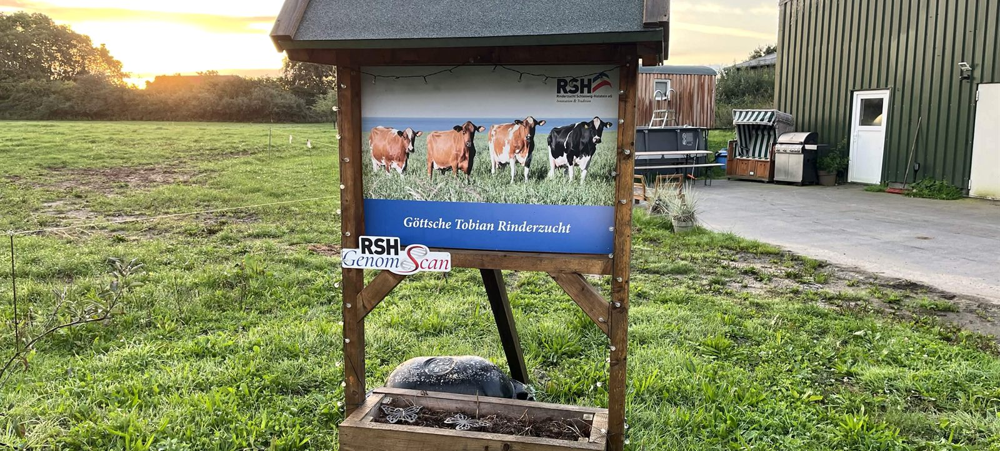

Zucht ist bei uns kein Nebenzweig der Milchviehhaltung.
Aus unserer Milchviehherde ist über die Jahre eine eigene Rinderzucht entstanden, die wir unter dem Namen Göttsche Tobian Rinderzucht führen. Unsere Zuchttiere tragen das Präfix GTR. Wenn du also auf einer Rinderschau ein Tier mit dem Kürzel GTR im Namen siehst, stammt es von uns.
Wir nehmen regelmäßig an Rinderschauen und Zuchtveranstaltungen teil, mit einem klaren Schwerpunkt auf Angler Rotvieh. Über die Jahre haben wir dabei einige Auszeichnungen gesammelt, von einzelnen Klassensiegen bis zum Grand Champion.
Fünf Rassen, ein klarer Schwerpunkt.
Wir halten und züchten fünf verschiedene Rinderrassen. Im Mittelpunkt unserer Zuchtarbeit steht das Angler Rotvieh.
Alte Rinderrasse aus Angeln in Schleswig-Holstein. Robust, langlebig und der Schwerpunkt unserer eigenen Zuchtarbeit unter dem Präfix GTR.
Die klassische schwarzbunte Milchrasse, bei uns fester Bestandteil der Herde.
Die rotbunte Variante der Holstein-Rasse, ebenfalls Teil unseres Bestands.
Kleinere Rasse mit besonders gehaltvoller Milch, bei uns ein Teil der Herde.
Robuste, langlebige Rasse, die unseren Bestand abrundet.
Drei Generationen auf dem Siegertreppchen.
Unsere Zuchtgeschichte reicht über viele Jahre zurück. Diese Erfolge zeigen, wie sich unsere Zuchtlinien über Generationen weiterentwickelt haben.
Lina, beste Euter-Kuh
Bei der VAR-Schau 2017 wird unsere Lina, eine Tochter von Dragomir, als beste Euter-Kuh der Schau ausgezeichnet.
GTR Zelda, Grand Champion
Auf der Rinderschau in Süderbrarup wird GTR Zelda zunächst mit 1a ausgezeichnet, anschließend zur Siegerkuh Jung gekürt und am Ende zum Grand Champion der Schau.
RZS Tara, Siegerin der älteren Kühe
RZS Tara, die Mutter von GTR Zelda, wird bei Neumünster am Abend zur Siegerin der älteren Kühe gewählt, mit zu diesem Zeitpunkt bereits acht Kälbern.
GTR Darunia, Siegerin der Jungrinder
GTR Darunia, die Tochter von GTR Zelda, wird bei Neumünster am Abend Siegerin der Jungrinder. Damit wurden bei derselben Schau Großmutter und Enkelin ausgezeichnet, und mit GTR Zelda dazwischen reicht die Erfolgslinie über drei Generationen.
Ein Auszug unserer GTR-Zuchttiere.
Hinter jedem Namen steht ein eigenes Tier mit eigener Abstammung. Ein kleiner Ausschnitt aus unserer laufenden Zuchtarbeit.
Was auf unseren Wänden hängt.
Neugierig geworden? Wir zeigen dir unsere Tiere auch gerne live, ob als Praktikant, als Kollege vom Nachbarhof oder als Besucher.
Kontakt aufnehmen